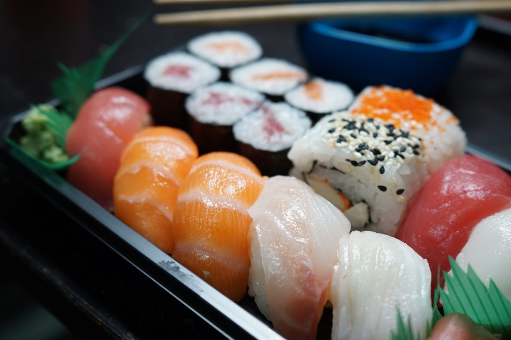
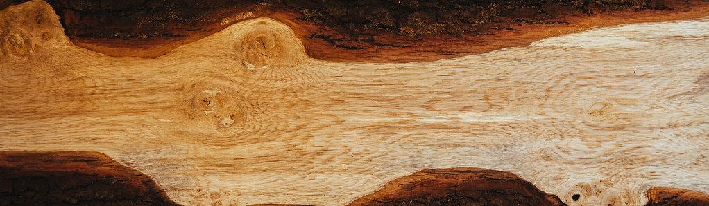
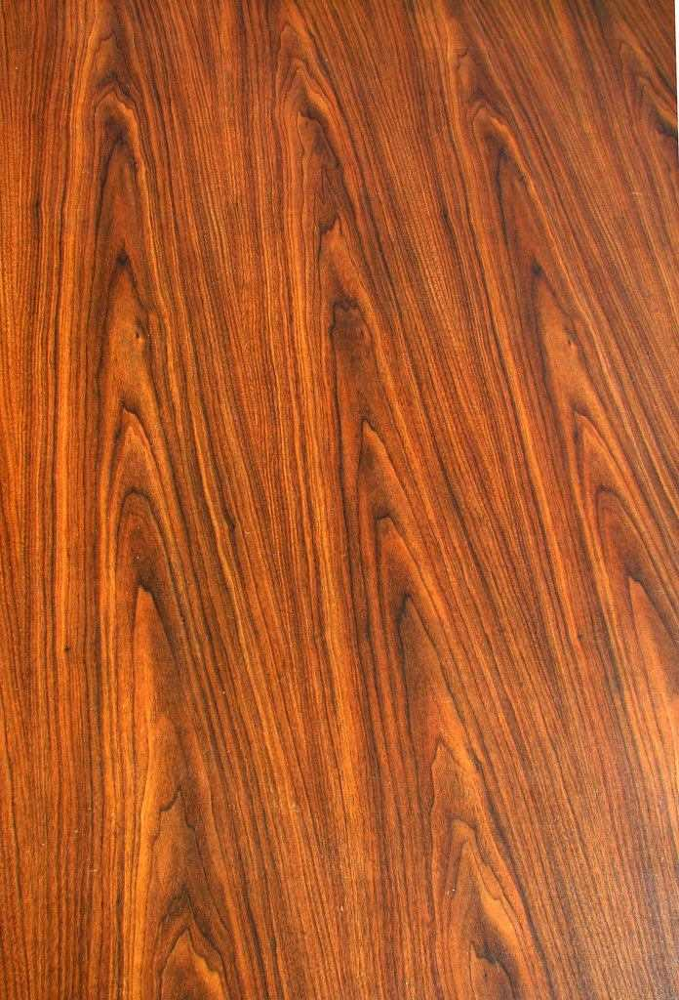

父の巻物、息子の握り。
浜作は、父が巻物を、息子が握りを担う、親子二代の寿司店です。
近年は息子が握りの中心を担う場面が増え、少しずつ代替わりが進んでいます。

父 ― 巻物
干瓢巻きをはじめとした巻物を担当。丁寧な仕事ぶりが、ご来店のお客様からも評判です。

息子 ― 握り
握りを担当し、近年は店の中心を担う場面が増えてきました。シャリは小さめに握られ、口の中でほろっと崩れると、ご来店のお客様から評価をいただいています。
お品書きのご紹介
握り並 1,550円〜
にぎり
特上寿司や、握り七貫と巻物4品を組み合わせた上握りもご用意しています。
巻物・一品料理
父担当の干瓢巻き、とろ鉄火巻のほか、白子ポン酢など季節の一品料理も。日本酒とあわせてお楽しみください。

精進寿司・自家製いなり寿司
野菜を中心に仕立てた精進寿司と、クルミを合わせた浜作ならではの自家製いなり寿司をご用意しています。

ランチ・お土産
人気のにぎりランチをはじめ、ランチ・ディナーどちらも営業。お持ち帰り(お土産)にも対応しています。
シーンに合わせて選べる3つのお席
店内は広く、清潔に保たれています。カウンター・小上がり・お座敷の3タイプのお席から、その日の目的に合わせてお選びいただけます。

カウンター席
おひとりでのランチや、職人の手元を眺めながらの食事に。

小上がり
ご家族やご友人とのお食事に。落ち着いた雰囲気でゆっくりと。
お座敷
日本酒とともに、腰を据えて楽しみたい夜のひとときに。
ご来店のお客様より
Googleマップのクチコミより(投稿者様のお名前は伏せております)初めての来店でした。親子で営む職人技が光るお寿司屋さんです。父が巻物、息子が握りを担当。店内は広く、カウンター・小上がり・お座敷とお席も選べます。にぎりランチをいただきましたが、ネタもシャリも美味しく、お父様担当の干瓢巻きも絶品でした。丁寧な仕事が伝わるお店です。近くにあったら嬉しい一軒だと思います。次回は精進寿司ランチをいただきたいです。
平日のランチで伺いました。シャリは小さめで、口の中でほろっと崩れる握りに技術を感じます。 ※追記:家族で夜にも訪問しました。お料理も美味しいですが、やはり口の中でほろりと崩れる握りが一番の魅力です。店内はお客様も多く賑わっていて、満足度の高いひとときでした。また伺いたいと思います。
雰囲気がとても良く、お寿司も美味しいです。特にシャリが絶妙な美味しさ。ランチもあり、お酒を楽しみに伺うのもおすすめです。
特上のお寿司はもちろん、とろ鉄火巻もとても美味しかったです。日本酒の品揃えもあり、お酒とおつまみを楽しめます。白子ポン酢は臭みがなく、とても美味しかったです。しかも安心できる価格帯でした。
5人で夜に伺いました。握り並1,550円〜とリーズナブルな価格帯です。上握り寿司や上海鮮丼などを注文。上握りは握り七貫と巻物4品で、シャリは少なめなので女性や年配の方でも食べきりやすい量です。器もおしゃれでした。自家製いなり寿司(クルミ入り)も追加しましたが、こちらも美味しかったです。精進寿司も侮れない美味しさ。お土産(持ち帰り)も可能とのことです。久しぶりに伺ったら息子さんが中心になっていて、代替わりを感じました。ランチタイムも営業しているとのことなので、次回はランチメニューもいただきたいです。
ご来店・お問い合わせ
ご来店のご予約やお問い合わせは、お電話またはInstagramのダイレクトメッセージからお気軽にどうぞ。
一部の写真はフリー素材のイメージです。実際の店内・お料理写真は、貴店にご提供いただいたものに差し替えます。